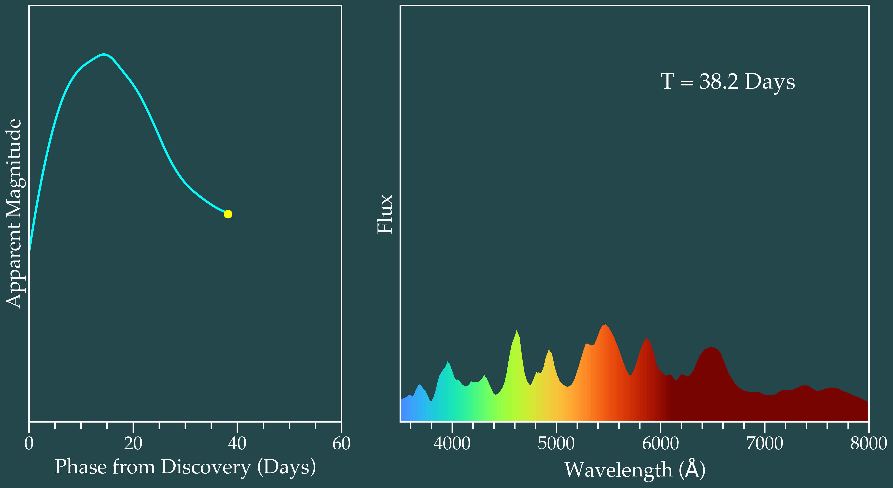

I’m a Postdoctoral Research Fellow with the NSF-Funded Institute For AI and Fundamental Interactions (IAIFI), where I use machine learning to study core-collapse supernovae. I'm particularly interested in strongly-interacting transients and precursor emission, which can each shed light on the final stages of single and binary stellar evolution. I also think a lot about large-scale synoptic surveys (YSE, ATLAS, and soon the Vera C. Rubin Observatory LSST). You can find me either at the Harvard Center for Astrophysics or the Lab for Nuclear Science at MIT.
I earned my Ph.D. in Astronomy at the University of Illinois at Urbana-Champaign, and spent some time as a Pre-Doctoral Fellow at the Flatiron Institute's Center for Computational Astrophysics in Spring 2022.
Complementing my research goals, I’m also passionate about building community and creating welcoming spaces within astrophysics. I founded astro[sound]bites, the audio counterpart to the popular blog astrobites, to highlight the work of early-career scientists. During my Ph.D., I led Astronomy Cultural Journal Clubs at UIUC, and I've spearheaded outreach projects in the US, Gabon, and India. In my free time, you can find me biking, running, and reading.
You can
download my CV here.
Research
Rapid Inference from Survey Streams
Rubin, Roman, and JWST will revolutionize our understanding of the time-domain sky, but only if we have the architecture in place to investigate the weird, unexpected phenomena that they will discover. I develop fast, scalable methods to find and prioritize events within massive survey streams, and am an active member of the ANTARES alert broker.
Transient-Host Galaxy Studies
The local environment where transients occur can provide tantalizing evidence for the nature of their progenitors. Within
the Dark Energy Science Collaboration., I combine observations with state-of-the-art simulations to investigate these correlations for poorly-understood classes of events.
Early-Time Supernova Signatures
Data obtained in the first few days of an explosion provide an in-depth view into the final moments of a star's life and the earliest moments of its death. As a member of
the Young Supernova Experiment, I search for these young transients and model signatures of shock breakout, CSM interaction, and flash ionization.
Chemical Enrichment from High Redshift Supernovae
Multi-scale simulations are required to understand the atomic and molecular chemistry of the early Universe. At the Los Alamos National Laboratory, I built a chemical solver that runs inline with cosmological simulations and probed the abundances of formed CO, OH, and H2O.

Publications
An updated list of my publications can be found here:
ADS Publications
Software
I maintain/contribute to multiple open source software projects.
| Name |
Description |
| The Transient Recommender |
A framework for finding and tagging transients of interest, using feature-based similarity search and science-specific object ranking.
|
| The Meta Broker |
A website for aggregating transient information across multiple brokers (Fink, Lasair, ANTARES, etc).
|
| reLAISS |
A package for fast transient similarity search and anomaly detection.
|
| Prost |
A package for parallelized, probabilistic host galaxy association of transients.
|
| Galaxies Hosting Supernovae and other Transients (GHOST) |
A package for associating transients with their host galaxies and estimating host photo-zs.
|
Outreach & Academic Service
Astronomy Cultural Journal Club (ACJC)
Through UIUC's Society for Equity in Astronomy (SEA), I organized and led monthly discussions on topical issues in equity and inclusion.
Astro[sound]bites
I am a creator and former host of the podcast astro[sound]bites, where I discuss recent astronomy research with other graduate students. We amplify the voices of early-career scientists through regular interviews and explore sound-based representations of astronomy data. To date, we've published over 95 episodes, received outreach grants from the ASP, AGU, and AAS, and have listeners in 56 countries. Find our website
here.
Astronomy on Tap
From 2021 to 2023, I was a local organizor for UIUC's chapter of Astronomy on Tap, which took place at The Literary in downtown Champaign the third Thursday of every month. In October 2023, I gave my most recent Astronomy on Tap talk (now in Boston!) on The Stargazing Machine: Building Software to Study Cosmic Explosions (and End World Hunger)".
Sounds of the Spectrum
As part of the 2017 Story of Space, an exploration of the overlap between astronomy and art, I designed and implemented an interactive exhibit exploring the chemical composition of the universe through sound. The exhibit ran for a week in Goa, India and reached thousands of members of the public. Read more about it
here and here.
Visualizations
You are welcome to use these for your own talks. Click a video to download it.
1. Optical spectral sequence of a type Ia supernova. Movie inspired by The Supernova Cosmology Project and data interpolated
from the 'SUGAR' SN Ia spectral templates at http://supernovae.in2p3.fr/sugar/#sec-3.

2. Mollweide sky map of supernovae classified (spectroscopically or photometrically) from 1800 to 2022. Right histogram shows breakdown by redshift.
 2. Photometric evolution of a supernova in a spiral galaxy, using data from Gagliano+21.
2. Photometric evolution of a supernova in a spiral galaxy, using data from Gagliano+21.